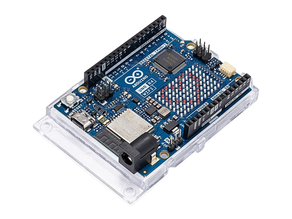

AUTOMATIZZA LA TUA SERRA CON ARDUINO
La serra automatica realizzata con Arduino è in grado di monitorare l'umidità del suolo e la luminosità all'interno della serra, e di attivare l'irrigazione e l'apertura/chiusura delle tapparelle in base alle condizioni ambientali. Il sistema è completamente automatizzato e può essere programmato per adattarsi alle esigenze specifiche delle piante presenti nella serra. Inanzitutto abbiamo definito i sensori che avremmo dovuto implementare nella serra; purtroppo alcuni di questi non sono presenti in tinkercad quindi abbiamo dovuto utilizzare altri strumenti. Degli esempi sono il Water Sensor, il tmp e la pompa d'acqua, assenti in tinkercad, che nella piattaforma online abbiamo sostituito rispettivamente con un sensore di rilevamento distanza a ultrasuoni, il dht11 e un semplice motore cc. Volendo avremmo potuto utilizzare il rilevatore di distanza a ultrasuoni anche nella realtà ma sarebbe risultato meno preciso e affidabile del water sensor. E' stato inoltre scelto un dht11 in quanto più preciso del dht22. Il funzionamento del progetto è molto semplice: ad ogni dato rilevato dai sensori corrisponde un evento: - nel caso in cui l'umidità scenda sotto un certo valore si attiva la pompa dell'acqua finalizzata all'innaffiamento del terreno; - se la temperatura ambientale si alza sopra la soglia definita allora si attiva la ventola di raffreddanento - nel caso in cui il livello dell'acqua del serbatoio scenda sotto il livello definito si attiva il buzzer - se l'ambiente non fornisce abbastanza luce viene attivato un led artificiale Tutti i dati rilevati dai sensori sono riportarti sullo schermo lcd in tempo reale.

Il codice di programmazione della serra automatica realizzata con Arduino è disponibile su GitHub: